Talk
The figures of the PLINIUS 2026 talk, by slide.
Study sites and heatwave days per summer, 1950–2010 vs 2011–2021
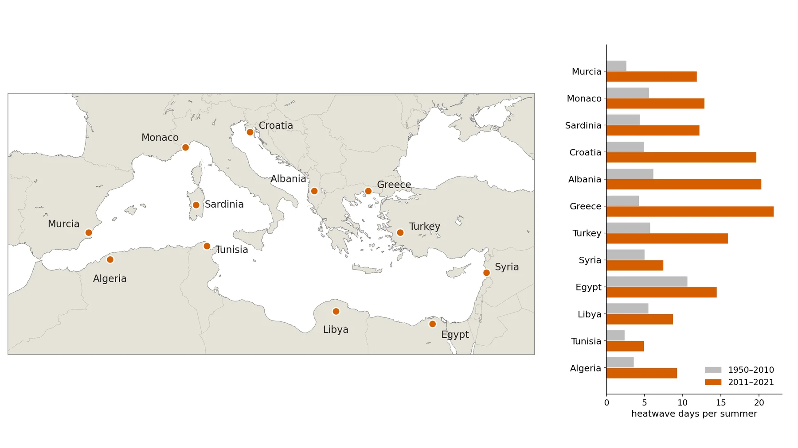
About this figure
Left: map of the 12 Mediterranean study sites. Right: mean number of heatwave days per summer (May–Aug) at each site in the training period 1950–2010 (grey) and the test period 2011–2021 (orange). Every site has more heatwave days per summer in the test period (e.g. Greece 4.3 vs 21.9).
presentacion/figuras/01_localizaciones_B.png
Local predictors: KMeans clusters of six fields on the 1° EuroMed box
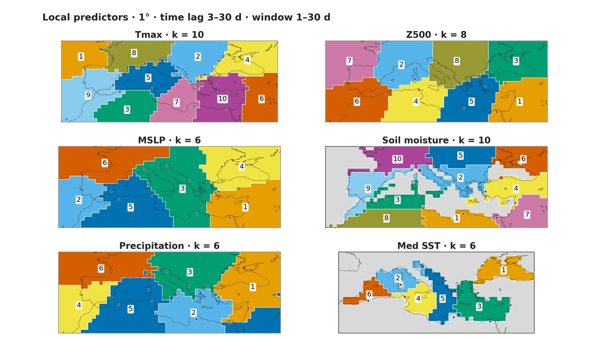
About this figure
KMeans clusters of standardized anomalies (fitted on 1950–1970) for the six local fields on the 1° EuroMed box: Tmax (k = 10), Z500 (8), MSLP (6), soil moisture (10), precipitation (6) and Mediterranean SST (6). Clusters are numbered as in the predictor names, black dots are the 12 sites, and grey nodes are not used (sea for soil moisture, land and excluded nodes for SST). Each cluster can enter the model with a time lag of 3–30 d and a window of 1–30 d; CO2 and the Etesian index, also local predictors, are not drawn.
presentacion/figuras/02_clusters_local.png
Remote predictors: KMeans clusters of seven 2° fields plus NAO, ENSO and IOD
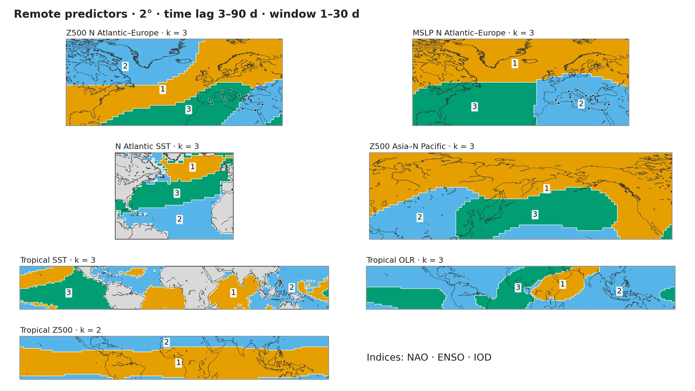
About this figure
KMeans clusters at 2° of Z500 and MSLP over the North Atlantic–Europe, North Atlantic SST, Z500 Asia–North Pacific, tropical SST and tropical OLR (k = 3 each) and tropical Z500 (k = 2), plus the NAO, ENSO and IOD indices; black dots are the sites where they fall inside a domain. Remote predictors can enter with a time lag of 3–90 d and a window of 1–30 d. 'Tropical OLR' is the ERA5 net top-of-atmosphere longwave flux (= −OLR), labelled −OLR in the results figures.
presentacion/figuras/02_clusters_remote.png
The CRO wrapper: from spatio-temporal predictors to selected drivers
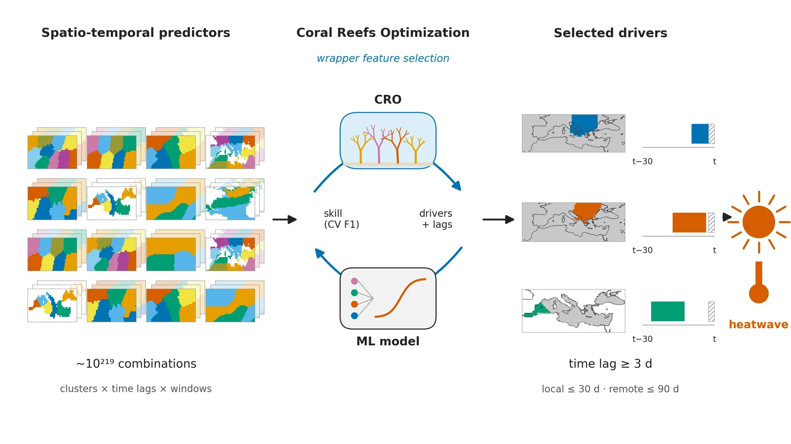
About this figure
Conceptual view of STCO-FS: the Coral Reefs Optimization (CRO) searches about 10^219 combinations of clusters, time lags and windows, scores each candidate by the cross-validated F1 of a machine-learning model (logistic regression), and keeps a set of drivers, each a cluster region with a lag window before heatwave day t. The three drivers drawn are real choices of the Albania seed-42 run (Z500 c8, Tmax c2 and Med SST c6), which kept 26 of the 71 drivers in total. The hatched strip next to t marks days never used (time lag ≥ 3 d; at most 30 d for local and 90 d for remote drivers).
presentacion/figuras/03_cro_concepto.png
Local clusters coloured by the number of sites selecting them in 3/3 seeds
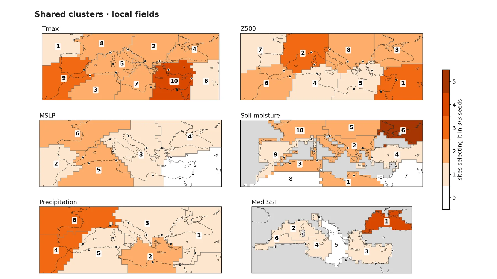
About this figure
Each local cluster is coloured by how many of the 12 sites selected it in all 3 seeds (white = no site, light grey = nodes not used); black dots are the sites. The highest count is soil moisture c6, north of the Black Sea (5 sites vs 1.7 expected by chance, p = 0.013), but it is not significant after false-discovery-rate correction (q = 0.73); no cluster is shared by more sites than chance after that correction.
presentacion/figuras/04c_shared_local.png
Tmax: pre-heatwave anomaly maps per site (train 1950–2010)
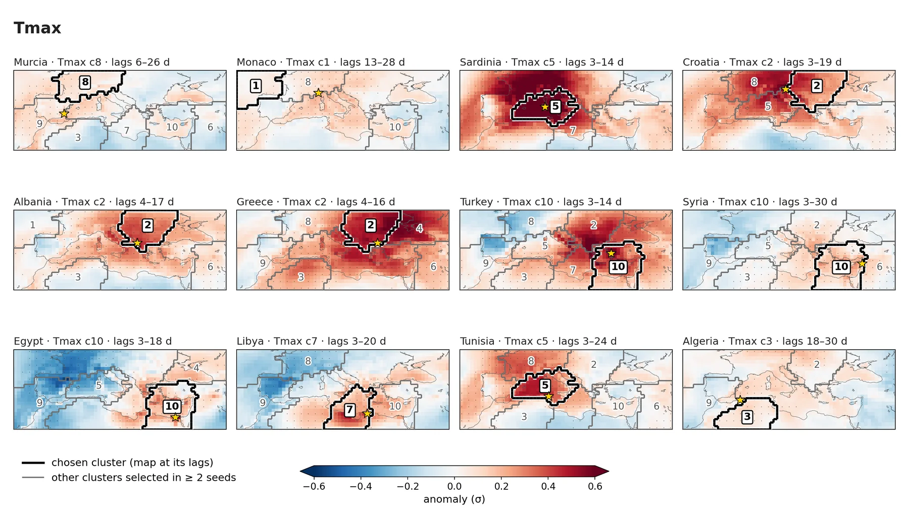
About this figure
Each panel maps the plain anomaly R (σ, vs 1980–2010) on 1950–2010 heatwave days, averaged over the representative lag window (panel title) of the site's most-selected Tmax cluster. Thick black outline with boxed number = that cluster, thin grey outline = other clusters selected by ≥ 2 of 3 seeds at the site, small dots = p < 0.05 in the year-permutation test (shown on every second node), star = site; scale ±0.6 σ. Sardinia c5, Greece c2, Libya c7 and Egypt c10 are robust in all 3 seeds; the warm patch moves with the site, largely because heatwaves are defined from the site's own Tmax.
presentacion/figuras/05c_atlas_L_t2m_max.png
Z500: pre-heatwave anomaly maps per site (train 1950–2010)
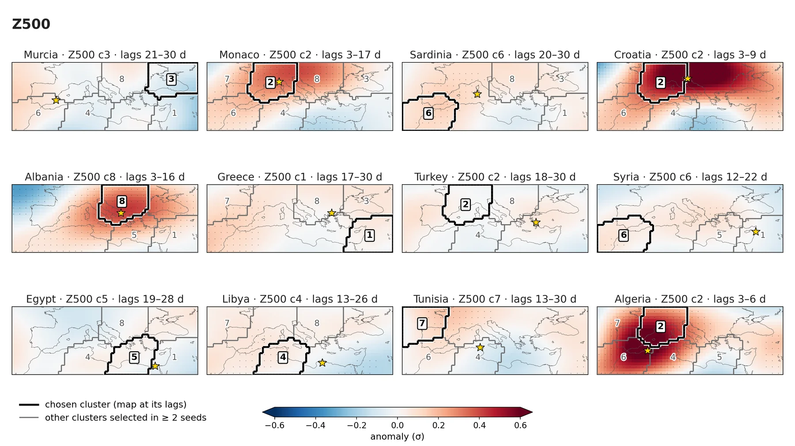
About this figure
Each panel maps the plain anomaly R (σ, vs 1980–2010) on 1950–2010 heatwave days, averaged over the representative lag window (panel title) of the site's most-selected Z500 cluster. Thick black outline with boxed number = that cluster, thin grey outline = other clusters selected by ≥ 2 of 3 seeds at the site, small dots = p < 0.05 (every second node), star = site; scale ±0.6 σ. Monaco c2 (3–17 d) and Albania c8 (3–16 d), a ridge over the site, are robust in all 3 seeds, and Croatia c2 (3–9 d) in 2 of 3.
presentacion/figuras/05c_atlas_L_z500.png
Med SST: pre-heatwave anomaly maps per site (train 1950–2010)
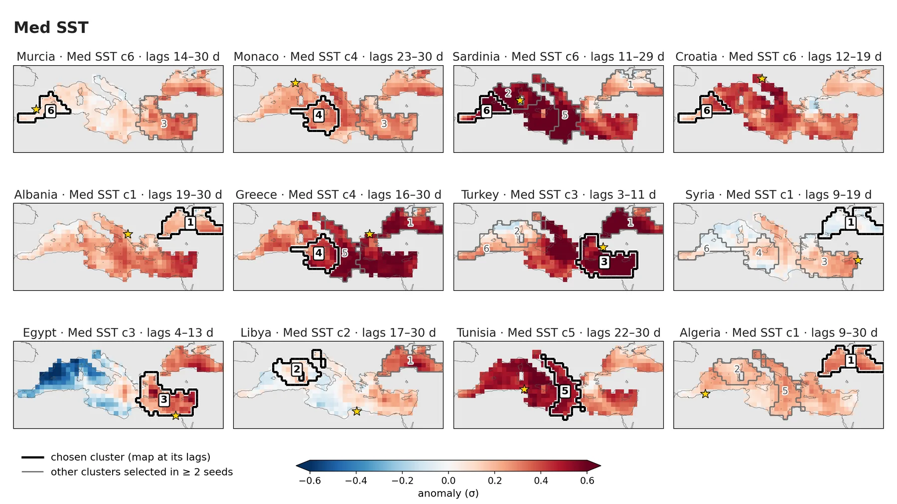
About this figure
Each panel maps the plain anomaly R (σ, vs 1980–2010) on 1950–2010 heatwave days, averaged over the representative lag window (panel title) of the site's most-selected Mediterranean SST cluster. Thick black outline with boxed number = that cluster, thin grey outline = other clusters selected by ≥ 2 of 3 seeds, small dots = p < 0.05 (every second node), star = site, grey = land; scale ±0.6 σ. In most panels the anomaly is positive over most of the basin, selected or not (median +0.33 σ for the 8 clusters selected by all 3 seeds), mainly reflecting the warming trend contained in R; none of the clusters shown is robust.
presentacion/figuras/05c_atlas_L_sstMed.png
N Atlantic SST: pre-heatwave anomaly maps per site (train 1950–2010)
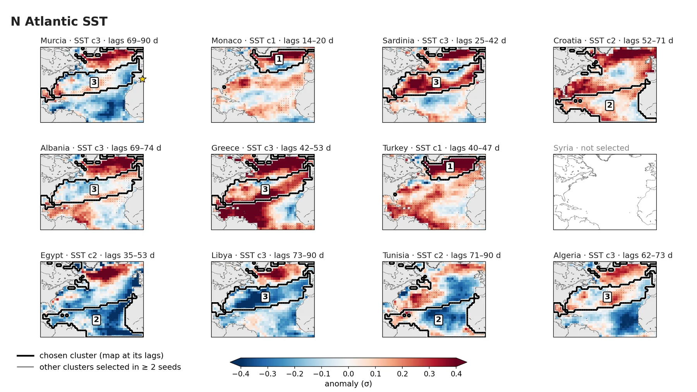
About this figure
Each panel maps the plain anomaly R (σ, vs 1980–2010) on 1950–2010 heatwave days, averaged over the representative lag window (panel title) of the site's most-selected North Atlantic SST cluster. Thick black outline with boxed number = that cluster (other selected clusters are not outlined), small dots = p < 0.05, grey = land and excluded nodes, star = Murcia at the domain edge; scale ±0.4 σ. Syria selected no cluster of this field; Turkey c1 (40–47 d) is robust in both seeds that selected it, and no other panel is robust.
presentacion/figuras/05c_atlas_A_sst.png
Tropical SST: pre-heatwave anomaly maps per site (train 1950–2010)
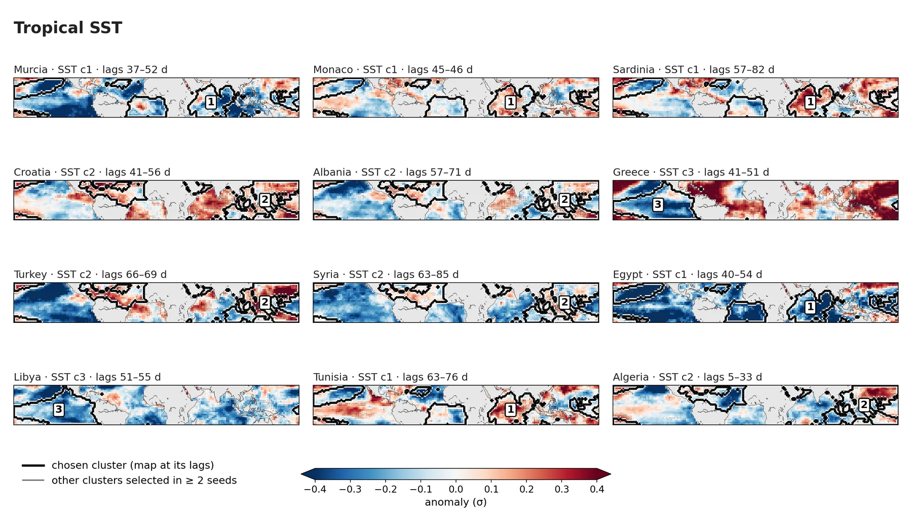
About this figure
Each panel maps the plain anomaly R (σ, vs 1980–2010) on 1950–2010 heatwave days, averaged over the representative lag window (panel title) of the site's most-selected tropical SST cluster. Thick black outline with boxed number = that cluster (other selected clusters are not outlined), small dots = p < 0.05, grey = land; scale ±0.4 σ. Turkey c2 (66–69 d) is robust in both seeds that selected it; no other panel is robust.
presentacion/figuras/05c_atlas_T_sst.png
Local Z500: rotated modes linked to the CRO-selected precursor clusters
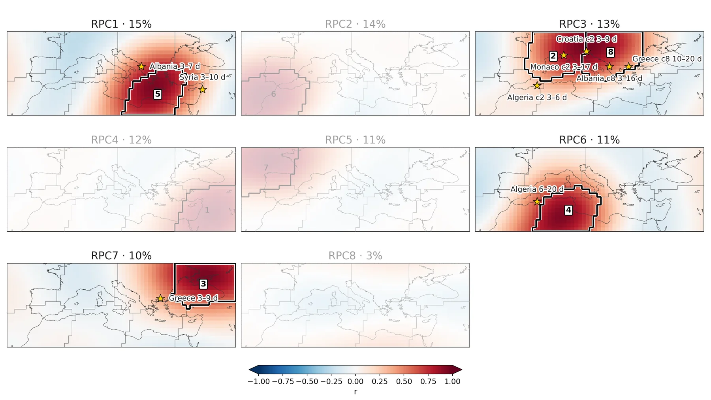
About this figure
The eight rotated modes of local Z500 (N = 8, as in the rotated-EOF maps above), linked to the CRO selection: a yellow star marks a site where a cluster of that mode, selected in at least 2 of the 3 seeds, has a significant pre-heatwave plain-anomaly contrast (year-permutation p < 0.05 in train 1950–2010 and in test 2011–2021, same sign); its label gives the site, the cluster when the mode holds two, and the lag window. All qualifying clusters are starred, not only each site's strongest one, so Albania, Greece and Algeria appear in two modes. Faded modes (RPC2, RPC4, RPC5, RPC8, their clusters in grey) have no such cluster at any site; the active ones are RPC3 (c2, c8), RPC1 (c5), RPC7 (c3) and RPC6 (c4).
eof/figuras/L_z500_2b_reof_selected.png